สไลด์ฉบับปรับปรุง
ITDS231-Lecture7-ARP-Switch-VLAN-2026.pdf(53 หน้า, ผศ.ดร.ฐิตินันท์ ตันติธรรม) — ฉบับเดิมมีเฉพาะ VLANฉบับนี้ เพิ่ม 4 หัวข้อใหม่ไว้ข้างหน้า: Recap Ethernet, ARP, Repeater–Hub–Bridge–Switch, Transparent Switch + Loop + Spanning Tree และเพิ่มสไลด์ VLAN อีก 2 หน้า (Why VLANs?, NETGEAR & Home Router)
เนื้อหา VLAN ส่วนที่เหลือ (ชนิด VLAN, trunk, 802.1Q, voice VLAN, ranges, คำสั่ง Cisco IOS) เหมือนฉบับเดิม — ดูรายละเอียดเต็มที่ สรุป-Lecture7-VLAN.md (อยู่ถัดลงไปในหน้านี้)
ภาพในไฟล์นี้ขึ้นต้นด้วย
l7b-(เลขหน้าตามสไลด์ฉบับใหม่)
1. Recap: Ethernet
| หัวข้อ | สรุป |
|---|---|
| Ethernet Frame | Preamble 7 | SFD 1 | Destination MAC 6 | Source MAC 6 | Type/Length 2 | Data 46–1500 | FCS 4 (ไบต์) — frame ทั่วไป 64 ถึง 1518 ไบต์; FCS ช่วยตรวจ error |
| MAC Address | ที่อยู่ Layer 2 ขนาด 48 บิต; destination MAC ระบุผู้รับ, source MAC ระบุผู้ส่ง |
| Switching | switch เรียนรู้ source MAC ลง MAC address table แล้ว ส่ง frame ออกเฉพาะพอร์ตที่ถูกต้อง |
| Broadcast | dest MAC FF:FF:FF:FF:FF:FF → flood ออก ทุกพอร์ตใน VLAN เดียวกัน ยกเว้นพอร์ตขาเข้า |
Key takeaways: Frame = หน่วยข้อมูล Layer 2 · MAC address = ตัวระบุอุปกรณ์ · Switch = learns and forwards · Broadcast = one-to-all ภายใน LAN/VLAN
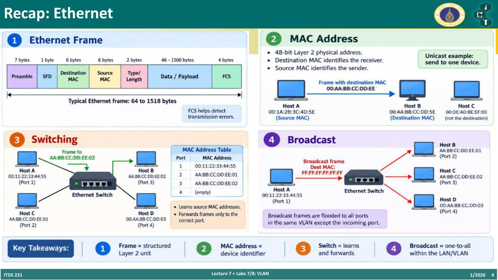
2. ARP (Address Resolution Protocol) ⭐⭐
2.1 ARP คืออะไร
- การสื่อสารใน LAN ต้องใช้ MAC address
- ARP = แปลง IP address เป็น MAC address
- เป็นโปรโตคอลแบบ request–response
- ข้อความ ARP ถูก ห่อด้วย link-layer protocol โดยตรง (ไม่ได้อยู่ใน IP packet)
- ARP cache เก็บรายการคู่ IP ↔ MAC — เก็บใน host โดย OS
ARP entry 2 ชนิด:
| ชนิด | ลักษณะ |
|---|---|
| Dynamic | ARP สร้างและดูแลอัตโนมัติ (ไม่ถาวร) |
| Static | ผู้ใช้ตั้งค่าเอง (ไม่หมดอายุ — never age) |
2.2 ตัวอย่าง ARP cache (arp -a)
| Internet Address | Physical Address | Type |
|---|---|---|
| 192.168.1.1 | 00-04-ed-ec-f2-b6 | dynamic |
| 192.168.1.3 | 84-8e-df-e1-44-21 | dynamic |
| 192.168.1.4 | 8c-0e-e3-86-95-a9 | dynamic |
| 192.168.1.255 | ff-ff-ff-ff-ff-ff | static |
| 224.0.0.22 | 01-00-5e-00-00-16 | static |
| 224.0.0.252 | 01-00-5e-00-00-fc | static |
| 255.255.255.255 | ff-ff-ff-ff-ff-ff | static |
→ เครื่องจริงใน LAN เป็น dynamic; ที่อยู่ broadcast (ff-ff-…) และ multicast (01-00-5e-…) เป็น static
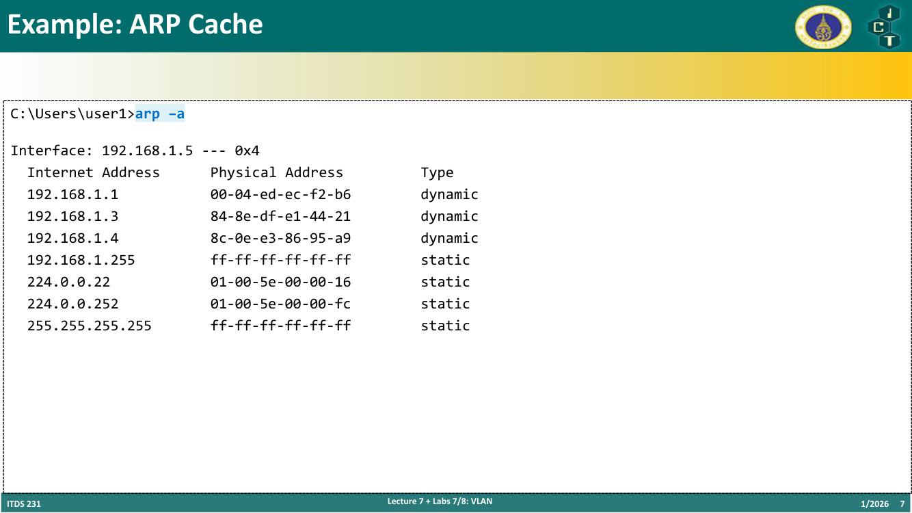
2.3 ARP Operations ⭐
A ต้องการส่งข้อมูลให้ B: 0. A เช็ค ARP cache ของตัวเองก่อน
- A broadcast ARP request ถึงทุกเครื่องในเครือข่าย (ใช้ broadcast address)
- B ส่ง ARP reply กลับหา A
- A เก็บคำตอบลง cache แล้วเริ่มสื่อสาร
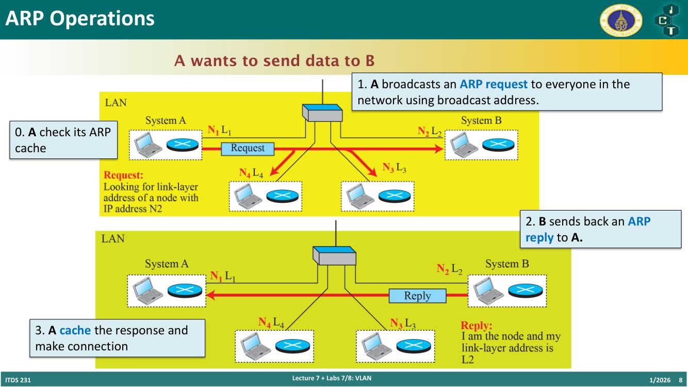
2.4 ARP Request / Reply Messages
| ARP request | ARP reply | |
|---|---|---|
| Operation | 0x0001 | 0x0002 |
| Hardware type / Protocol type | 0x0001 (Ethernet) / 0x0800 (IPv4) | เหมือนกัน |
| Hardware length / Protocol length | 0x06 / 0x04 (MAC 6 ไบต์, IP 4 ไบต์) | เหมือนกัน |
| Sender | A_MAC, A_IP | B_MAC, B_IP |
| Target | All 0s (ยังไม่รู้ MAC ของ B), B_IP | A_MAC, A_IP |
| Frame | ปลายทาง = broadcast address (จาก A ถึงทุกเครื่อง) | unicast (จาก B ถึง A) |
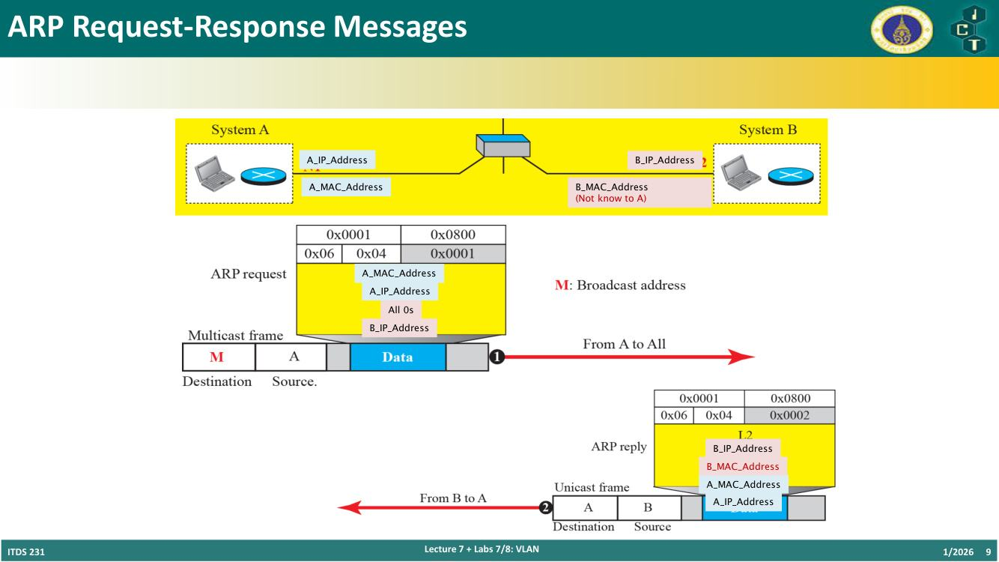
⚠️ Request = broadcast, Reply = unicast — และ request ใส่ 0 ทั้งหมด ในช่อง MAC ของปลายทางเพราะยังไม่รู้
2.5 ตัวอย่าง Internet Communication (Alice → R1 → R2 → Bob) ⭐
N = network address (IP), L = link address (MAC)
| ช่วง | ดู routing/forwarding table | ARP หา MAC ของ | Frame |
|---|---|---|---|
| (1) ที่ Alice | next hop = N1 ของ R1 | N1 → ได้ L1 | dest L1, src LA, datagram NA → NB |
| (2) ที่ R1 | next hop = N3 ของ R2 | N3 → ได้ L3 | dest L3, src L2, datagram NA → NB |
| (3) ที่ R2 | next hop = NB | NB → ได้ LB | dest LB, src L4, datagram NA → NB |
- data-link layer ได้ link-layer address ของตัวเอง (LA) จาก interface
- IP ต้นทาง/ปลายทาง (NA, NB) ไม่เปลี่ยน แต่ MAC เปลี่ยนทุก hop และ ARP ถูกใช้หา MAC ของ next hop ไม่ใช่ของปลายทางสุดท้าย
| (1) Alice | (2) R1 | (3) R2 |
|---|---|---|
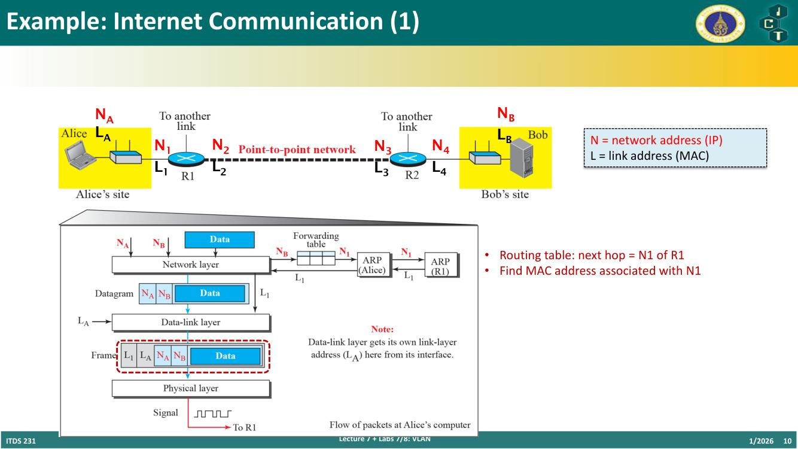 |
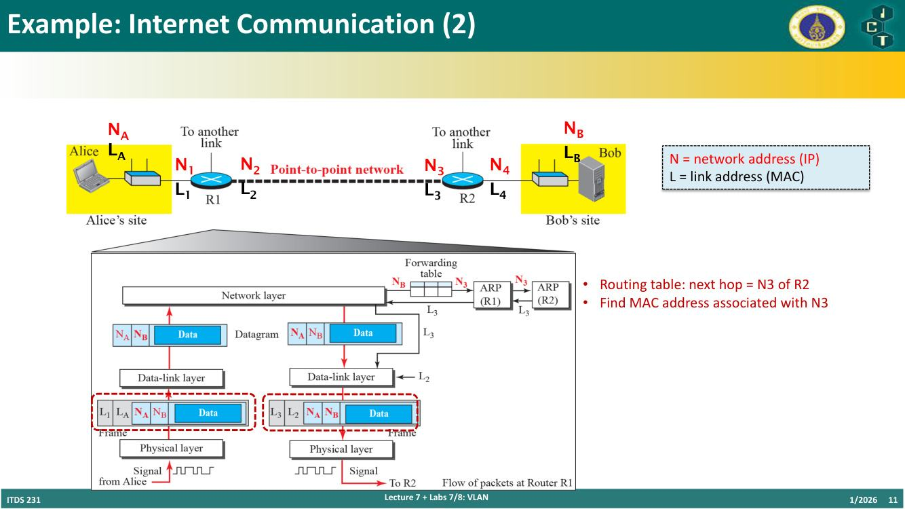 |
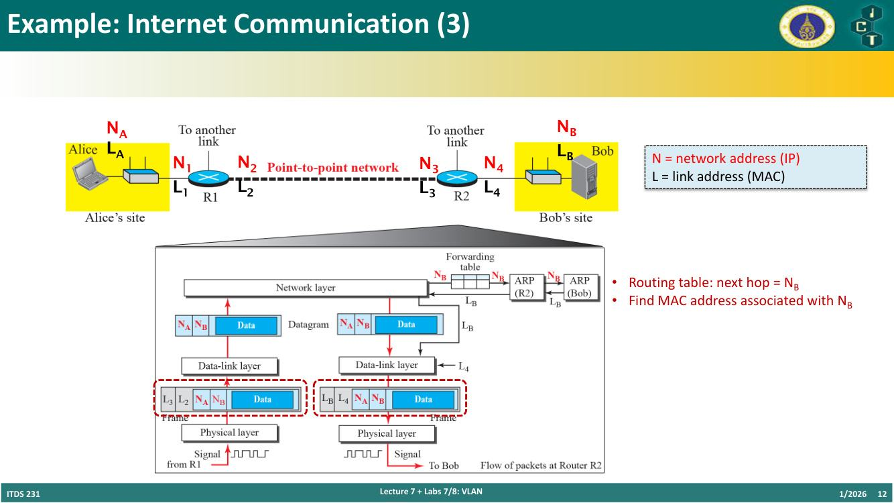 |
3. Repeater, Hub, Bridge, Switch ⭐
| อุปกรณ์ | Layer | ลักษณะ |
|---|---|---|
| Repeater | Physical | ต่อ LAN 2 segment เพื่อ regenerate และ re-time สัญญาณ กลับเป็นรูปบิตเดิม แล้วส่งกลับลง bus → แก้ข้อจำกัดความยาวสาย coaxial; ⚠️ เป็น regenerator ไม่ใช่ amplifier |
| Hub | Physical เท่านั้น | repeater ที่พัฒนาเป็น multiport เป็นจุดเชื่อมหลายอุปกรณ์ + ทำหน้าที่ repeater |
| Bridge | Data link | มี ตารางใช้ตัดสินใจ filtering; ไม่เปลี่ยน MAC address ใน frame; ปกติมี 2 พอร์ต |
| Switch | Physical + Data link | multi-port bridge (self-learning); แยก collision domain เหลือ 1 อุปกรณ์ต่อ domain — แก้ปัญหาของ hub |
- ยุคแรกใช้ bus topology — เมื่อ bus ยาวเกิน สัญญาณปลายสาย attenuate และเพี้ยน จึงต้องมี repeater
3.1 Hub ทำงานอย่างไร
- frame จาก A ถึง B มาถึง hub → regenerate สัญญาณ (ลบ noise) → ส่งออกทุกพอร์ต ยกเว้นพอร์ตที่รับเข้า = frame ถูก broadcast
- ทุกสถานีได้รับ แต่ เฉพาะ B เก็บไว้ ที่เหลือทิ้ง
- hub/repeater เป็นอุปกรณ์ physical layer:
- ไม่มี link-layer address
- ไม่ตรวจ link-layer address ของ frame
- ไม่มี filtering — ไม่มีความฉลาดพอจะรู้ว่าควรส่งออกพอร์ตไหน
3.2 Switch
- ระดับ physical: regenerate สัญญาณที่รับมา
- ระดับ data link: ตรวจ MAC address (source และ destination) ใน frame แล้วส่งไปยัง destination MAC (filtering) — ตัดสินใจได้ว่าควรส่งออกพอร์ตไหน
| Repeater | Hub | Bridge | Switch |
|---|---|---|---|
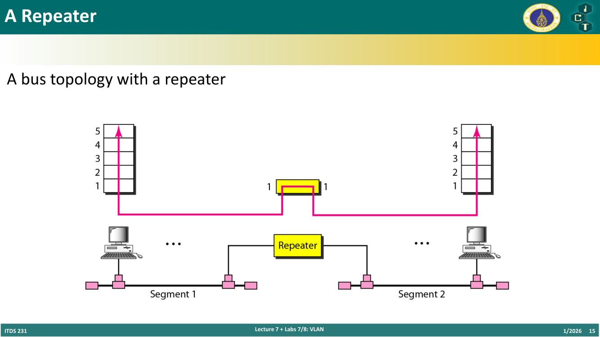 |
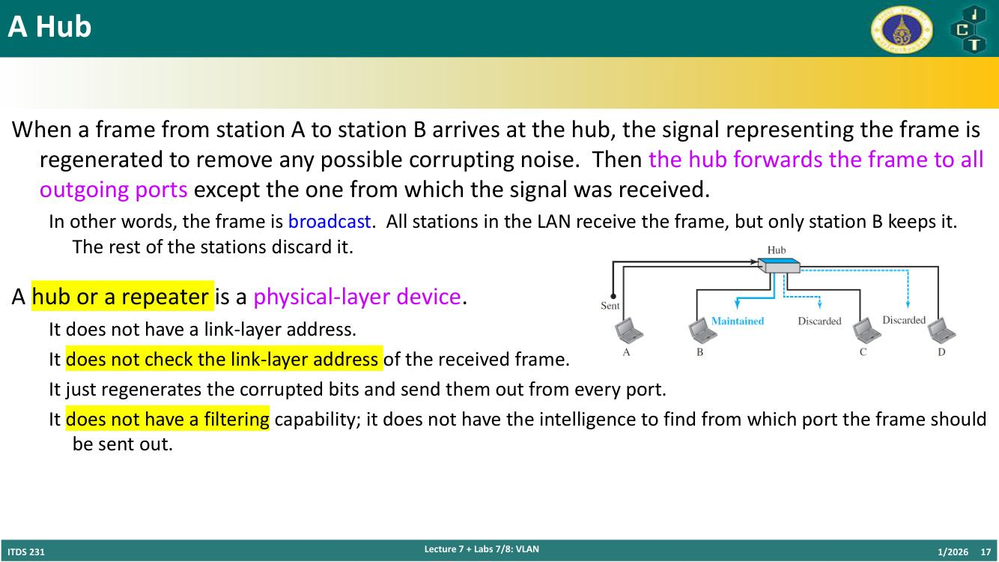 |
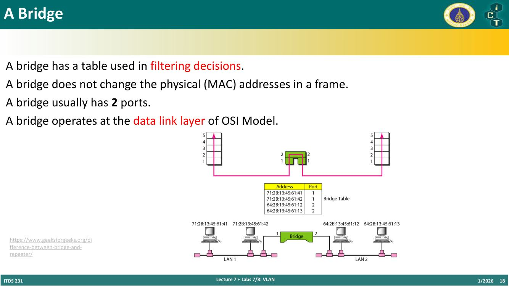 |
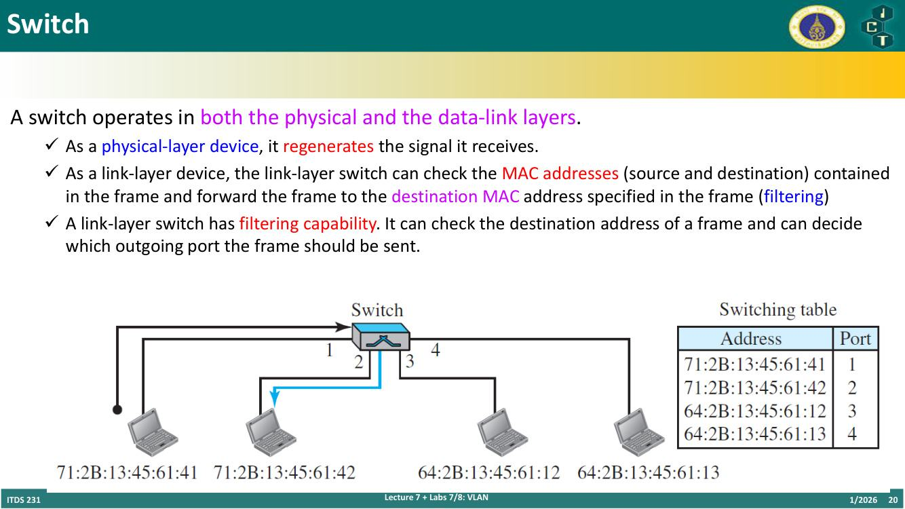 |
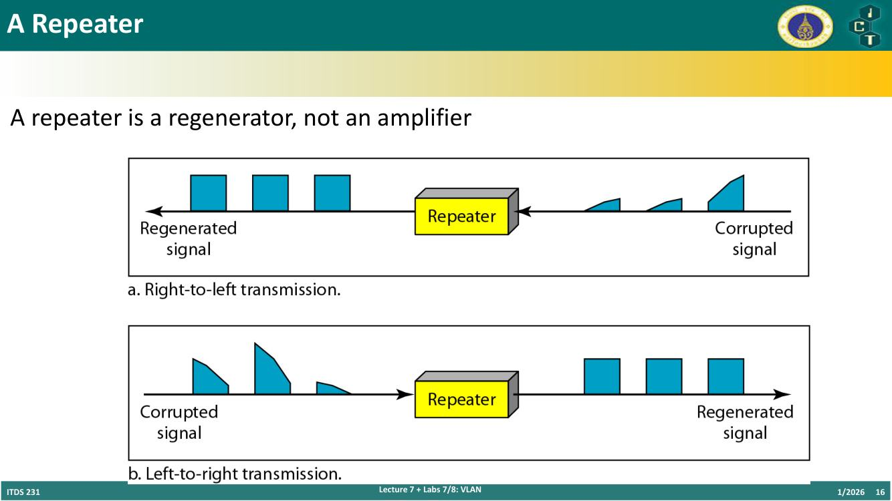
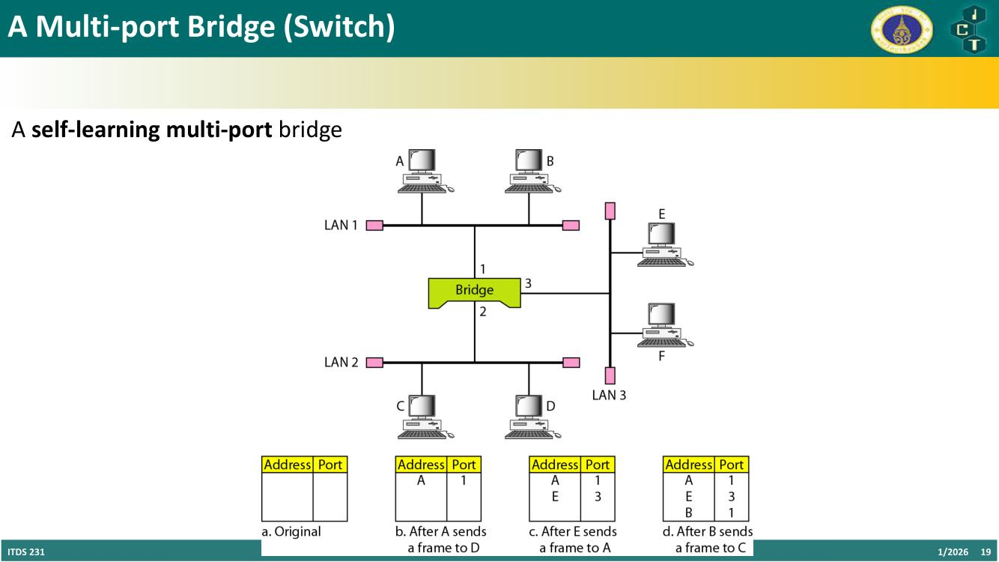
4. Transparent Switches ⭐
- Transparent switch = switch ที่ สถานีไม่รู้เลยว่ามี switch อยู่
- เพิ่มหรือถอด switch ออกจากระบบ ไม่ต้องตั้งค่าสถานีใหม่
- ตาม IEEE 802.1d ระบบที่ใช้ transparent switch ต้องผ่าน 3 เงื่อนไข:
- Frame ต้องถูก forward จากสถานีหนึ่งไปอีกสถานี
- Forwarding table อัปเดตอัตโนมัติ โดยเรียนรู้จากการเคลื่อนที่ของ frame
- ต้องป้องกัน loop ในระบบ
4.1 Learning Process (ตารางค่อย ๆ ถูกสร้าง)
Switch 4 พอร์ต: A (71:2B:13:45:61:41) พอร์ต 1, B (…:42) พอร์ต 2, C (64:2B:13:45:61:12) พอร์ต 3, D (…:13) พอร์ต 4
| ขั้น | เหตุการณ์ | ตารางที่ได้ |
|---|---|---|
| a | เริ่มต้น | ว่าง |
| b | A ส่ง frame ถึง D | A → พอร์ต 1 |
| c | D ส่ง frame ถึง B | + D → พอร์ต 4 |
| d | B ส่ง frame ถึง A | + B → พอร์ต 2 |
| e | C ส่ง frame ถึง D | + C → พอร์ต 3 |
→ เรียนรู้จาก source address ของ frame ที่เข้ามาเสมอ
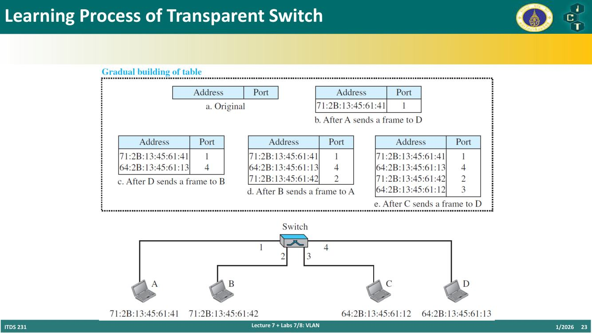
5. Loop Problem ⭐
- ผู้ดูแลระบบชอบมี switch สำรอง (redundant) — มากกว่า 1 ตัวระหว่าง LAN คู่เดียวกัน — เพื่อความน่าเชื่อถือ (ตัวหนึ่งเสีย อีกตัวทำงานแทน)
- แต่ redundancy สร้าง loop ได้ — loop เกิดเฉพาะเมื่อ broadcasting LAN 2 วงขึ้นไป (เช่นที่ใช้ hub) ถูกเชื่อมด้วย switch มากกว่า 1 ตัว
- วิธีแก้: switch ต้อง คุยกันเพื่อสร้างโครงสร้างแบบ tree
ลำดับเหตุการณ์ (A ส่ง frame ถึง D, ตารางของ switch ทั้งสองยังว่าง):
- switch ทั้งสอง forward frame และบันทึก source A
- ตอนนี้มี frame 2 สำเนา บน LAN 2 — สำเนาจาก switch ซ้ายถูก switch ขวารับ (ไม่รู้ D) จึงส่งต่อ และกลับกัน; ตารางถูกอัปเดตแต่ยังไม่มีข้อมูลของ D
- มี 2 สำเนาบน LAN 1 → ทำซ้ำขั้น 2
- วนไปเรื่อย ๆ — switch เป็น repeater ด้วย จึง regenerate สำเนาใหม่ทุกรอบ
สรุปไทยจากสไลด์: switch เรียนรู้ตำแหน่งของ A ผิดสลับไปมาระหว่างพอร์ต 1 และ 2 และ flood frame กลับไปมา frame วนซ้ำและเพิ่มจำนวนต่อเนื่อง เพราะ Ethernet frame ไม่มีค่า TTL สำหรับหยุดการวนลูป — ป้องกันด้วย Spanning Tree Protocol (STP) ซึ่งปิดกั้นเส้นทางสำรองบางเส้น
| Loop Problem | ลำดับการวน |
|---|---|
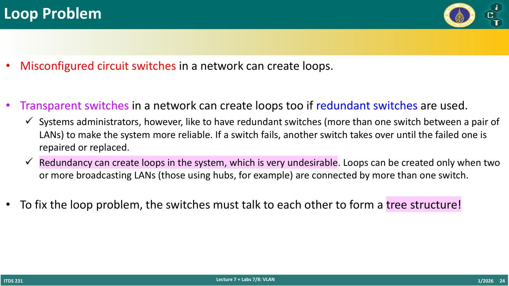 |
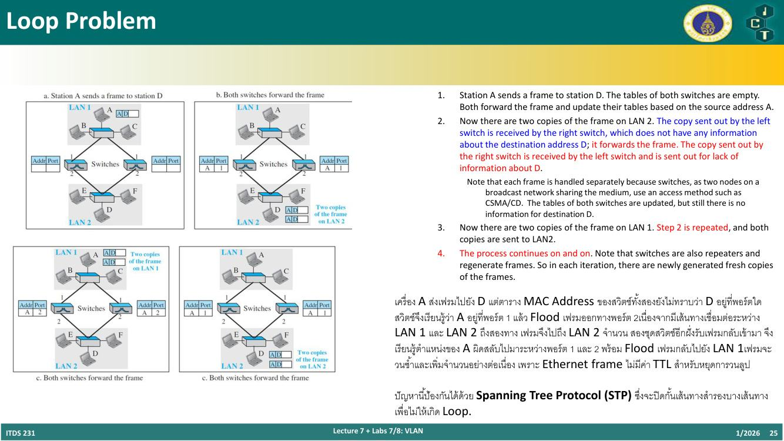 |
6. Spanning Tree Algorithm ⭐⭐
- IEEE 802.1d กำหนดให้ switch ใช้ spanning tree algorithm สร้าง topology ที่ไม่มี loop
- spanning tree = อัลกอริทึมกราฟที่แปลง กราฟให้เป็น tree ที่ไม่มี loop
- เปลี่ยน physical topology ไม่ได้ (สายต่ออยู่จริง) → สร้าง logical topology ทับ physical
- switch แลกเปลี่ยนข้อมูลลิงก์กัน แล้วสร้าง spanning tree
- ⚠️ ในอัลกอริทึมนี้ switch ถูกมองเป็น node ของกราฟ
6.1 Cost
- กำหนด cost (metric) ให้ทุก edge — ความหมายขึ้นกับผู้ดูแลระบบ ในสไลด์ใช้ minimum hops
- hop count: switch → LAN = 1, LAN → switch = 0
6.2 ขั้นตอน
- switch ทุกตัว broadcast ID ของตัวเอง → switch ที่ ID ต่ำสุด = root switch
- หา shortest path (cost รวมต่ำสุด) จาก root ไปยังทุก switch/LAN (ปกติใช้ Dijkstra)
- รวม shortest path ทั้งหมด = shortest tree
- พอร์ตที่อยู่บน spanning tree = forwarding port (ส่งต่อ frame); พอร์ตที่ไม่อยู่ = blocking port (บล็อก frame)
6.3 ตัวอย่างในสไลด์ (S1–S5, LAN1–LAN4)
- S1 เป็น root (ID ต่ำสุด) cost สะสม: S1 = 0, LAN1 = 1, LAN2 = 1, S2 = 1, S3 = 1, S4 = 1, LAN3 = 2, LAN4 = 2, S5 = 2
- พอร์ตบนลิงก์ S3–LAN3, S3–LAN4 และ S5–LAN3 เป็น blocking port — ยังเก็บลิงก์ไว้เป็นเส้นทางสำรอง
| Physical → Abstract topology | Cost และ Spanning tree | Port assignment |
|---|---|---|
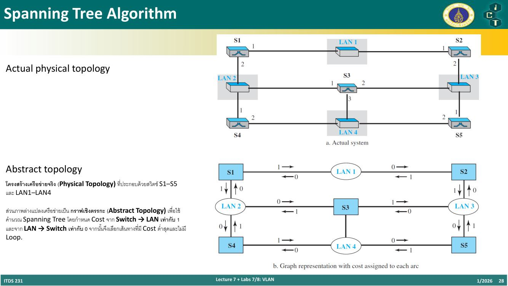 |
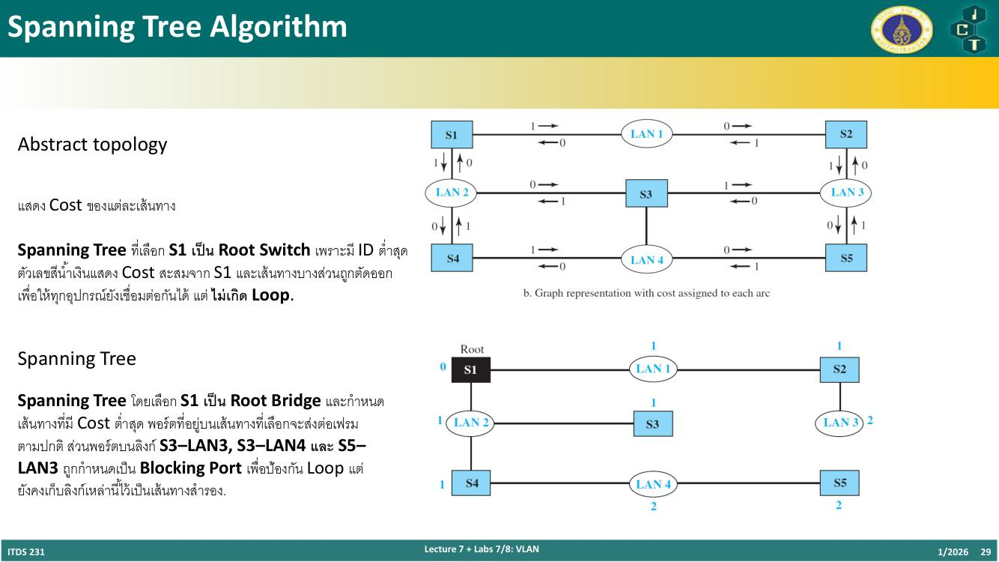 |
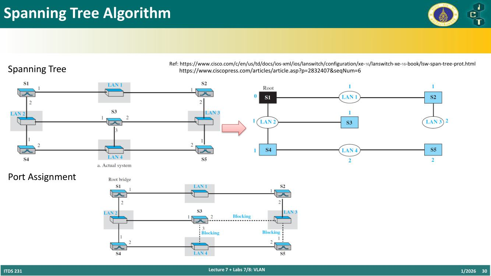 |
7. VLAN — สไลด์ที่เพิ่มใหม่
7.1 Bridge to VLAN: Why VLANs?
- ไม่มี VLAN → switch ที่ต่อกันทำตัวเป็น Layer-2 broadcast domain ใหญ่วงเดียว
- VLAN จัดกลุ่มอุปกรณ์แบบ logical แม้ต่ออยู่คนละ switch
- แต่ละ VLAN = broadcast domain แยก และมักตรงกับ IP subnet คนละวง
- Trunk link พา traffic หลาย VLAN ระหว่าง switch ด้วย 802.1Q tagging
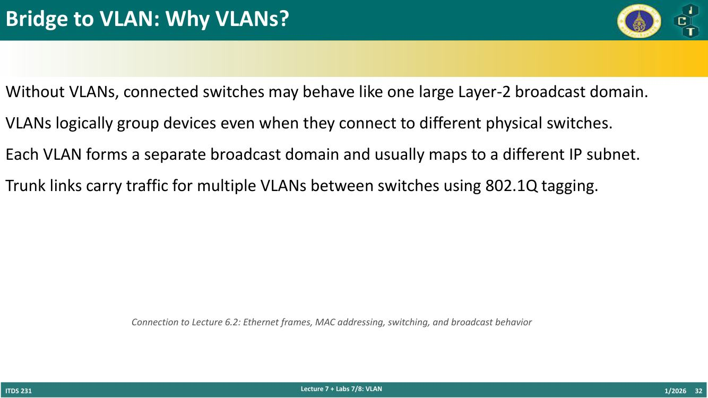
7.2 VLAN Configuration — NETGEAR & Home Router ⭐
หลัก: พอร์ต untagged ต่อ end device; พอร์ต tagged พาหลาย VLAN ระหว่างอุปกรณ์ที่รู้จัก VLAN
ขั้นตอน: สร้าง VLAN โดยกำหนด VLAN ID ใหม่ → ไปที่ VLAN membership (VLAN tagging) → กำหนดได้ 3 แบบ: port assignment, IP address range assignment, MAC address assignment
| ประเด็น | ความหมาย |
|---|---|
| VLAN ID 10 | สร้าง Layer 2 broadcast domain แยก |
| พอร์ต U (Untagged) | access port — frame ขาออก ไม่มี 802.1Q tag ต่อ end device หรือ home router |
| พอร์ต T (Tagged) | trunk port — frame คง VLAN tag ไว้ พาได้หลาย VLAN |
| พอร์ตที่ไม่มี U หรือ T | ไม่เป็นสมาชิก VLAN 10 แลก Layer 2 traffic กับ VLAN นี้ตรง ๆ ไม่ได้ |
| PVID | ของพอร์ต untagged ควรตั้งเป็น 10 เพื่อให้ frame ขาเข้าที่ไม่มี tag ถูกจัดเข้า VLAN 10 |
| Inter-VLAN routing | ข้าม VLAN ต้องใช้อุปกรณ์ Layer 3 (router หรือ Layer 3 switch) |
| Gateway | router ต้องมี gateway interface ของ VLAN เช่น 192.168.10.1/24 |
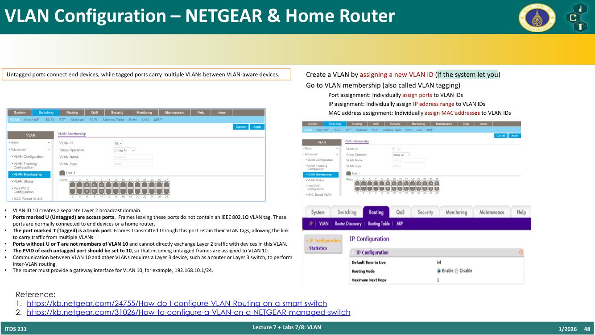
8. VLAN — หัวข้อที่เหมือนฉบับเดิม (สรุปย่อ)
รายละเอียดเต็มพร้อมภาพอยู่ใน สรุป-Lecture7-VLAN.md (อยู่ถัดลงไปในหน้านี้)
- VLAN = logical segmentation; unicast/multicast/broadcast แยกในแต่ละ VLAN; แต่ละ VLAN มีช่วง IP ของตัวเอง
- ประโยชน์ 6 ข้อ: smaller broadcast domains, security, IT efficiency, reduced cost, performance, simpler management
- VLAN 1 = default / default native / default management, ลบหรือเปลี่ยนชื่อไม่ได้
- Native VLAN (trunk เท่านั้น, ไม่ถูก tag) · Data VLAN · Management VLAN (SSH/Telnet, SVI) · Voice VLAN (CDP, CoS)
- Trunk: point-to-point, หลาย VLAN, default รองรับทุก VLAN, 802.1Q
- 802.1Q tag 4 ไบต์: TPID 0x8100 | Priority 3 บิต | CFI 1 บิต | VID 12 บิต (4096 VLANs); ใส่/ถอด tag ต้องคำนวณ FCS ใหม่
- Ranges: normal 1–1005 (vlan.dat) / extended 1006–4095 (running-config)
- คำสั่ง:
vlan id+name,switchport mode access,switchport access vlan id,show vlan [brief | id | name | summary],no vlan id,delete flash:vlan.dat,switchport mode trunk,switchport trunk native vlan,switchport trunk allowed vlan
9. คำศัพท์สำคัญ
| คำศัพท์ | ความหมาย | จำง่าย ๆ ว่า |
|---|---|---|
| ARP | แปลง IP → MAC ใน LAN | ถามว่า "ใครมี IP นี้" |
| ARP cache | ตาราง IP ↔ MAC ใน host | arp -a |
| Dynamic / Static entry | ARP สร้างเอง ไม่ถาวร / ตั้งเอง ไม่หมดอายุ | |
| ARP request / reply | broadcast / unicast | |
| Next hop | router ถัดไปตาม routing table | ARP หา MAC ของตัวนี้ |
| Repeater | regenerate + re-time สัญญาณ (physical) | ไม่ใช่ amplifier |
| Hub | multiport repeater ส่งออกทุกพอร์ต ไม่มี filtering | |
| Bridge | Layer 2, มีตาราง filtering, 2 พอร์ต | |
| Switch | multi-port bridge, physical + data link | |
| Filtering | ตัดสินใจว่าส่ง frame ออกพอร์ตไหนจาก destination MAC | |
| Transparent switch | สถานีไม่รู้ว่ามี switch | 802.1d |
| Loop | frame วนไม่สิ้นสุดเมื่อมี switch สำรอง | Ethernet ไม่มี TTL |
| Spanning tree / STP | สร้าง logical topology ไม่มี loop | |
| Root switch | switch ที่ ID ต่ำสุด | |
| Forwarding / Blocking port | พอร์ตบน tree / พอร์ตที่ถูกบล็อก | |
| Untagged / Tagged port | access port / trunk port | U / T |
| PVID | VLAN ที่ frame ขาเข้าแบบไม่มี tag ถูกจัดเข้า | |
| Inter-VLAN routing | ข้าม VLAN ด้วยอุปกรณ์ Layer 3 |
10. สรุปท้ายบท / จุดที่มักออกสอบ
- ARP: IP → MAC, request–response, ห่อใน link-layer frame โดยตรง
- ARP cache: dynamic (ไม่ถาวร) vs static (ไม่หมดอายุ);
arp -a - ARP 4 ขั้น: เช็ค cache → broadcast request → reply (unicast) → เก็บ cache
- ARP request ใส่ all 0s ในช่อง MAC ปลายทาง; operation 1 = request, 2 = reply
- ข้ามเครือข่าย: ARP หา MAC ของ next hop; IP คงเดิม MAC เปลี่ยนทุก hop
- Repeater = regenerator (ไม่ใช่ amplifier), physical layer
- Hub = multiport repeater, ส่งออกทุกพอร์ต, ไม่มี link-layer address, ไม่มี filtering
- Bridge = data link, มีตาราง filtering, 2 พอร์ต, ไม่เปลี่ยน MAC
- Switch = multi-port bridge, ทำงานทั้ง physical และ data link, แยก collision domain
- Transparent switch + 3 เงื่อนไข 802.1d: forward, เรียนรู้ตารางเอง, ป้องกัน loop
- Learning process: ตารางเริ่มว่าง เพิ่มจาก source address ทีละ frame
- Loop problem: เกิดจาก redundant switches; frame วนและเพิ่มจำนวน; Ethernet frame ไม่มี TTL
- Spanning tree: logical topology ทับ physical; switch เป็น node; root = ID ต่ำสุด; shortest path (Dijkstra); forwarding vs blocking port
- Cost: switch → LAN = 1, LAN → switch = 0
- ตัวอย่าง: S1 root; block S3–LAN3, S3–LAN4, S5–LAN3
- Untagged (U) = access, Tagged (T) = trunk, PVID, inter-VLAN routing ต้องใช้ Layer 3 + gateway
- หัวข้อ VLAN เดิมทั้งหมด (ดูไฟล์สรุปเดิม)
สรุป: Lecture 7 — VLAN (Virtual LAN)
บทนี้ต่อยอดจาก Lecture 6.2 (Ethernet switch) — VLAN แบ่ง switched LAN ออกเป็นหลายกลุ่มแบบ logical โดยไม่ต้องเดินสายใหม่
เรียนความหมายและประโยชน์ของ VLAN, ชนิดของ VLAN (default, data, native, management, voice), VLAN ข้ามหลาย switch ด้วย trunk และ IEEE 802.1Q tag, ช่วงหมายเลข VLAN, และ คำสั่ง Cisco IOS สำหรับสร้าง กำหนดพอร์ต ตรวจสอบ ลบ VLAN และตั้งค่า trunk (ใช้ใน Lab 7/8)
หมายเหตุ: หน้า Outline มีหัวข้อ Dynamic Trunking Protocol (DTP) แต่สไลด์ชุดนี้ไม่มีเนื้อหาของ DTP
สารบัญ
- Overview of VLANs
- Types of VLANs
- VLANs ในสภาพแวดล้อมหลาย switch (Trunk, 802.1Q tag)
- Voice VLAN
- VLAN Configuration (ranges, สร้าง, กำหนดพอร์ต, ตรวจสอบ, ลบ)
- VLAN Trunks (ตั้งค่า, ตัวอย่าง, ตรวจสอบ, reset)
- สรุปคำสั่ง
- คำศัพท์สำคัญ
- จุดที่มักออกสอบ
1. Overview of VLANs
1.1 VLAN คืออะไร ⭐
- VLAN = การเชื่อมต่อแบบ logical กับอุปกรณ์อื่นที่มีลักษณะคล้ายกัน
- การจัดอุปกรณ์เข้า VLAN ต่าง ๆ มีลักษณะดังนี้:
- แบ่งกลุ่มอุปกรณ์ (segmentation) แม้อยู่บน switch เดียวกัน
- จัดองค์กรให้ จัดการง่ายขึ้น
- broadcast, multicast และ unicast ถูกแยกอยู่ภายในแต่ละ VLAN
- แต่ละ VLAN มีช่วง IP address ของตัวเอง
- broadcast domain เล็กลง
ตัวอย่างในภาพ: ตึก 3 ชั้น แต่ละชั้นมี switch — แต่แบ่ง VLAN ตามแผนก ข้ามชั้นได้: VLAN 2 IT (10.0.2.0/24), VLAN 3 HR (10.0.3.0/24), VLAN 4 Sales (10.0.4.0/24)
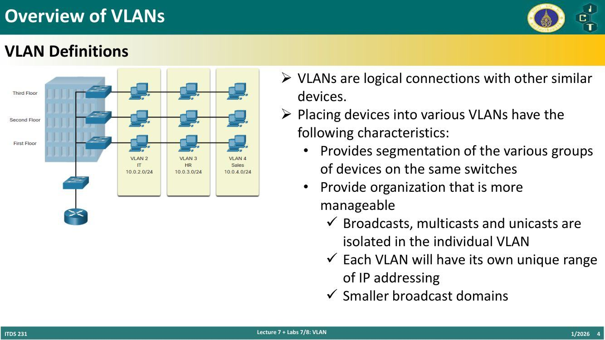
💡 VLAN เหมือนการแบ่ง "ห้องแชทกลุ่ม" ในบริษัท: พนักงานนั่งคนละชั้นก็อยู่กลุ่มเดียวกันได้ และข้อความประกาศ (broadcast) ในกลุ่มหนึ่งไม่รบกวนกลุ่มอื่น
1.2 ประโยชน์ของ VLAN ⭐
| ประโยชน์ | คำอธิบาย |
|---|---|
| Smaller Broadcast Domains | แบ่ง LAN แล้ว ลดขนาด broadcast domain (ตามสไลด์: ลดจำนวนอุปกรณ์ที่ได้รับ broadcast แต่ละครั้ง) |
| Improved Security | เฉพาะผู้ใช้ใน VLAN เดียวกันสื่อสารกันได้ |
| Improved IT Efficiency | จัดกลุ่มอุปกรณ์ที่มีความต้องการคล้ายกัน เช่น อาจารย์ vs นักศึกษา |
| Reduced Cost | switch ตัวเดียวรองรับหลายกลุ่ม/หลาย VLAN |
| Better Performance | broadcast domain เล็ก → traffic น้อยลง → bandwidth ดีขึ้น |
| Simpler Management | กลุ่มคล้ายกันใช้แอปและทรัพยากรเครือข่ายคล้ายกัน |
ตัวอย่าง topology: R1 ต่อ S1, S1 ต่อ S2 และ S3; PC1/PC4 = Faculty VLAN 10 (172.17.10.x), PC2/PC5 = Student VLAN 20 (172.17.20.x), PC3/PC6 = Guest VLAN 30 (172.17.30.x)
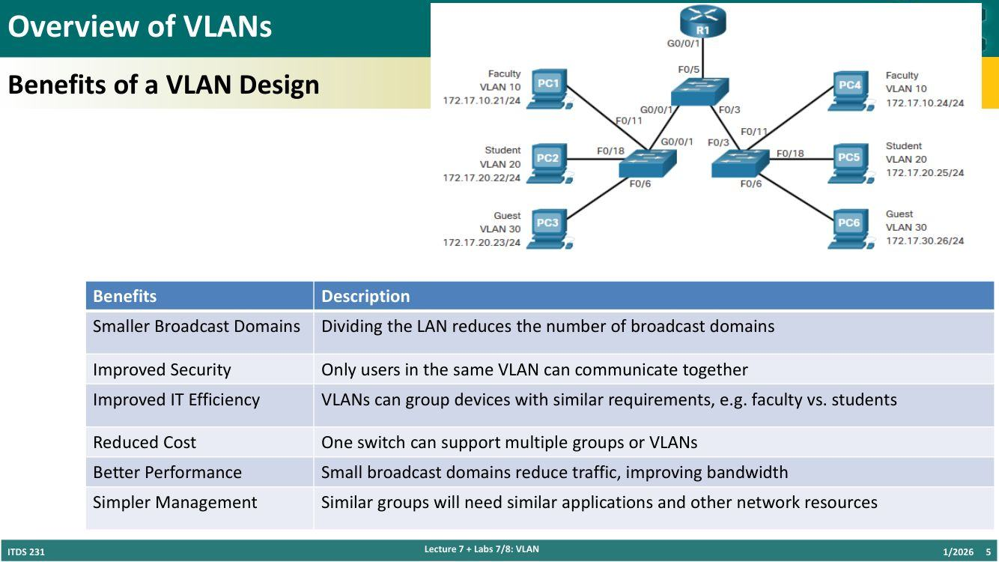
⚠️ อุปกรณ์ต่าง VLAN คุยกันตรง ๆ ไม่ได้ ที่ layer 2 — ต้องผ่านอุปกรณ์ layer 3 (router) เช่น R1 ในภาพ
2. Types of VLANs ⭐
2.1 Default VLAN
VLAN 1 มีสถานะเป็น:
- Default VLAN (ทุกพอร์ตอยู่ VLAN 1 ตั้งแต่แรก)
- Default Native VLAN
- Default Management VLAN
- ลบหรือเปลี่ยนชื่อไม่ได้
Note: แม้ลบ VLAN 1 ไม่ได้ แต่ Cisco แนะนำให้ย้ายหน้าที่ default เหล่านี้ไปไว้ VLAN อื่น (เพื่อความปลอดภัย)
ผลคำสั่ง show vlan brief บน switch ใหม่: VLAN 1 default (active) มีพอร์ต Fa0/1–Fa0/24, Gi0/1, Gi0/2 และมี VLAN 1002 fddi-default, 1003 token-ring-default, 1004 fddinet-default, 1005 trnet-default (act/unsup)
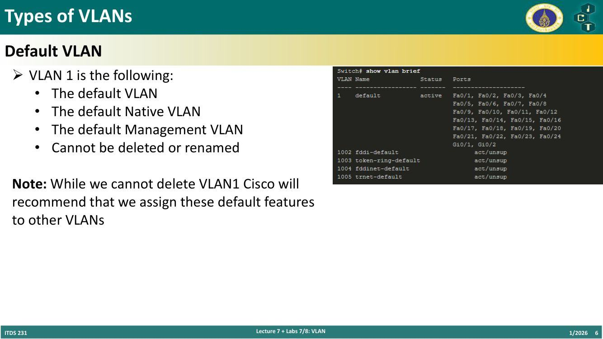
2.2 ชนิดอื่น ๆ
| ชนิด | หน้าที่ |
|---|---|
| Data VLAN | สำหรับ traffic ที่ผู้ใช้สร้าง (email, web); VLAN 1 เป็น default data VLAN เพราะทุก interface อยู่ใน VLAN นี้ |
| Native VLAN | ใช้กับ trunk link เท่านั้น; บน 802.1Q trunk ทุก frame ถูกติด tag ยกเว้น frame ของ native VLAN |
| Management VLAN | สำหรับ SSH/Telnet VTY traffic และ ไม่ควรปนกับ traffic ผู้ใช้; โดยทั่วไปคือ VLAN ที่เป็น SVI (Switched Virtual Interface) ของ layer 2 switch |
| Voice VLAN | สำหรับ traffic เสียง VoIP (ดูข้อ 4) |
3. VLANs ในสภาพแวดล้อมหลาย Switch
3.1 VLAN Trunk ⭐
- Trunk = ลิงก์ point-to-point ระหว่างอุปกรณ์เครือข่าย 2 ตัว
- หน้าที่ของ trunk (Cisco):
- ส่ง traffic ได้มากกว่า 1 VLAN
- ขยาย VLAN ข้ามทั้งเครือข่าย
- ค่าเริ่มต้นรองรับทุก VLAN
- รองรับ 802.1Q trunking
ตัวอย่าง: ลิงก์ S1–S2 (F0/1) และ S1–S3 (F0/3) เป็น trunk ทำให้ Faculty VLAN 10 ที่ S2 และ S3 อยู่ VLAN เดียวกันได้
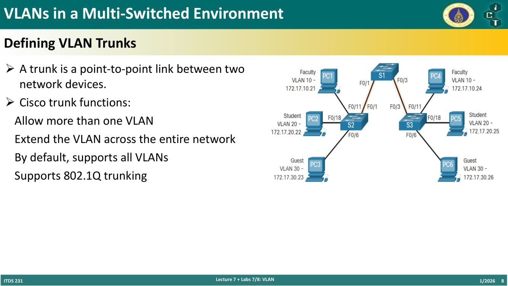
3.2 เครือข่ายที่ไม่มี VLAN
- ถ้าไม่มี VLAN อุปกรณ์ทุกเครื่องที่ต่อ switch จะได้รับ traffic unicast, multicast, broadcast ทั้งหมด
- ตัวอย่าง: ทุกเครื่องอยู่เครือข่ายเดียว 172.17.40.0/24 (subnet mask 255.255.255.0, network address 172.17.40.0) → PC1 ส่ง layer 2 broadcast → switch ส่ง broadcast ออกทุกพอร์ต → ทุกเครื่อง (PC4, PC5, PC6) ได้รับหมด
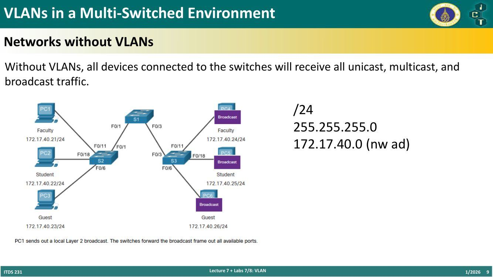
3.3 VLAN Identification with a Tag (IEEE 802.1Q) ⭐⭐
- 802.1Q header (tag) ขนาด 4 bytes แทรกใน Ethernet frame ระหว่าง Source MAC กับ Type/Length
- เมื่อใส่ tag → ต้องคำนวณ FCS ใหม่ (FCS1 ≠ FCS2)
- เมื่อส่งไปยัง end device → ต้องถอด tag ออก และคำนวณ FCS กลับเป็นค่าเดิม
- tag ใช้เฉพาะระหว่าง VLAN switch — ผู้ส่ง/ผู้รับปลายทางเห็น frame ปกติ
Frame ปกติ: Dst MAC | Src MAC | Type/Length | Data | FCS Frame ติด tag: Dst MAC | Src MAC | Tag | Type/Length | Data | FCS
| 802.1Q Tag Field | ขนาด | หน้าที่ |
|---|---|---|
| Type | 2 bytes | ค่า 0x8100 เรียกว่า Tag Protocol ID (TPID) |
| User Priority | 3 bits | ค่าลำดับความสำคัญ (ใช้กับ CoS/QoS) |
| CFI (Canonical Format Identifier) | 1 bit | รองรับ token ring frame บน Ethernet |
| VLAN ID (VID) | 12 bits | หมายเลข VLAN รองรับได้ถึง 4096 VLANs (2¹²) |
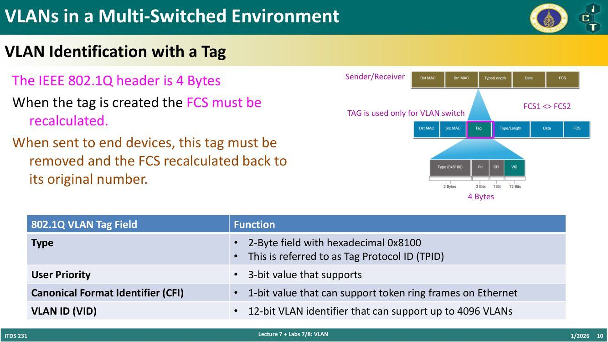
💡 รวม: 16 + 3 + 1 + 12 = 32 bits = 4 bytes
4. Voice VLAN
4.1 Voice VLAN Tagging
- โทรศัพท์ VoIP เป็น switch 3 พอร์ต (P1 ต่อ switch, P2 ต่อ phone ASIC ภายใน, P3 = access port ต่อ PC)
- switch ใช้ CDP (Cisco Discovery Protocol) แจ้งโทรศัพท์ว่า Voice VLAN คืออะไร
- โทรศัพท์ ติด tag traffic เสียงของตัวเอง และตั้ง CoS (Class of Service) ได้ — CoS = QoS ของ layer 2
- โทรศัพท์ อาจหรืออาจไม่ ติด tag ให้ frame จาก PC
ตัวอย่างในภาพ: พอร์ต F0/18 ของ S3 ตั้งค่าให้สั่งโทรศัพท์ติด tag voice ด้วย VLAN 150, จัดลำดับความสำคัญ voice frame และส่ง data frame ไป VLAN 20
| Traffic | Tagging |
|---|---|
| Voice VLAN | ติด tag พร้อมค่า Layer 2 CoS priority ที่เหมาะสม |
| Access VLAN | อาจติด tag พร้อม Layer 2 CoS priority ก็ได้ |
| Access VLAN | หรือ ไม่ติด tag (ไม่มี CoS priority) |
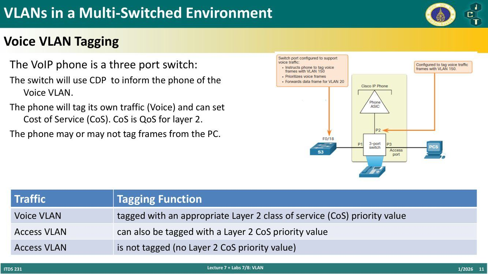
4.2 Voice VLAN Verification
คำสั่ง show interfaces fa0/18 switchport แสดงทั้ง data และ voice VLAN ของ interface:
- Administrative/Operational Mode: static access
- Access Mode VLAN: 20 (student)
- Trunking Native Mode VLAN: 1 (default)
- Voice VLAN: 150 (voice)
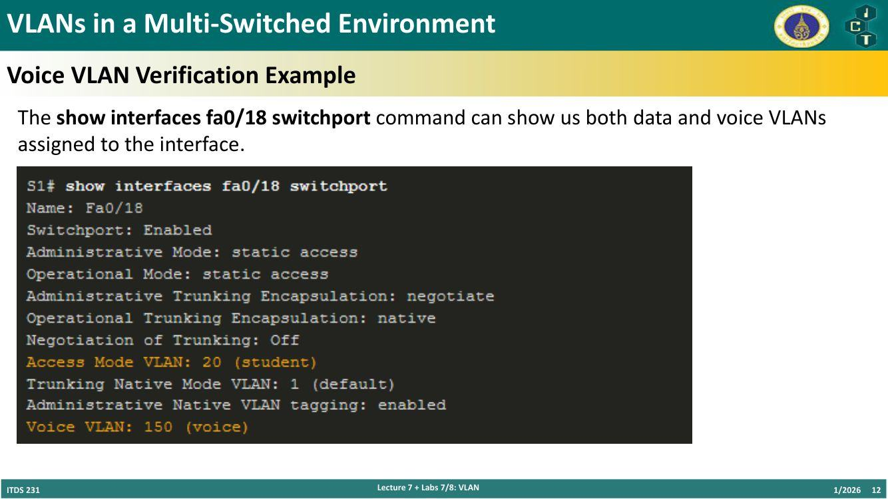
5. VLAN Configuration
5.1 VLAN Ranges บน Catalyst Switches ⭐
Catalyst 2960 และ 3650 รองรับ มากกว่า 4000 VLANs
| Normal Range VLAN 1 – 1005 | Extended Range VLAN 1006 – 4095 |
|---|---|
| ใช้ในธุรกิจ ขนาดเล็กถึงกลาง | ใช้โดย Service Providers |
| 1002 – 1005 สงวนไว้สำหรับ legacy VLANs (FDDI, Token Ring) | อยู่ใน running-config |
| 1, 1002 – 1005 สร้างอัตโนมัติและลบไม่ได้ | รองรับ feature ของ VLAN น้อยกว่า |
| เก็บในไฟล์ vlan.dat ใน flash | ต้องตั้งค่า VTP |
| VTP ซิงก์ข้อมูลระหว่าง switch ได้ |
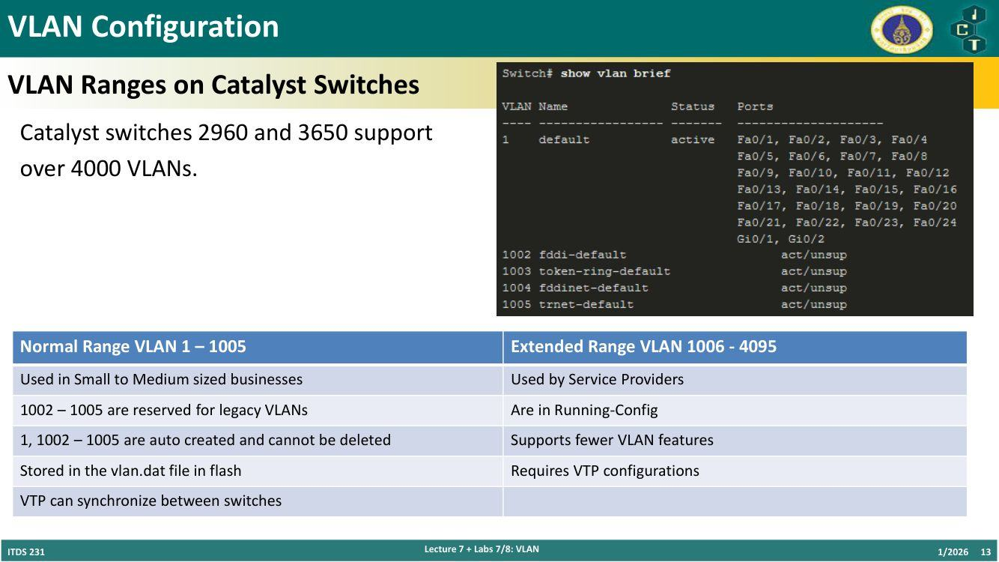
5.2 คำสั่งสร้าง VLAN
- รายละเอียด VLAN เก็บใน vlan.dat
- สร้าง VLAN ใน global configuration mode
| Task | IOS Command |
|---|---|
| เข้า global configuration mode | Switch# configure terminal |
| สร้าง VLAN ด้วยหมายเลขที่ถูกต้อง | Switch(config)# vlan vlan-id |
| ตั้งชื่อ VLAN | Switch(config-vlan)# name vlan-name |
| กลับ privileged EXEC mode | Switch(config-vlan)# end |
5.3 คำสั่งกำหนดพอร์ตเข้า VLAN
| Task | Command |
|---|---|
| เข้า global configuration mode | Switch# configure terminal |
| เข้า interface configuration mode | Switch(config)# interface interface-id |
| ตั้งพอร์ตเป็น access mode | Switch(config-if)# switchport mode access |
| กำหนดพอร์ตให้อยู่ VLAN | Switch(config-if)# switchport access vlan vlan-id |
| กลับ privileged EXEC mode | Switch(config-if)# end |
ตัวอย่าง (สร้าง VLAN 20 ชื่อ student และให้ Fa0/18 อยู่ VLAN นี้):
S1# configure terminal
S1(config)# vlan 20
S1(config-vlan)# name student
S1(config-vlan)# end
S1# configure terminal
S1(config)# interface fa0/18
S1(config-if)# switchport mode access
S1(config-if)# switchport access vlan 20
S1(config-if)# end
5.4 Data และ Voice VLAN บนพอร์ตเดียว
- access port กำหนดได้เพียง 1 data VLAN
- แต่ กำหนด Voice VLAN เพิ่มได้อีก 1 สำหรับกรณีโทรศัพท์และ end device ต่อผ่านพอร์ตเดียวกัน
- ตัวอย่าง: S3 F0/18 → IP phone → PC5 (Student VLAN 20, 172.17.20.25) — switchport ต้องรองรับ voice traffic ไป IP phone และ data traffic ไป PC5
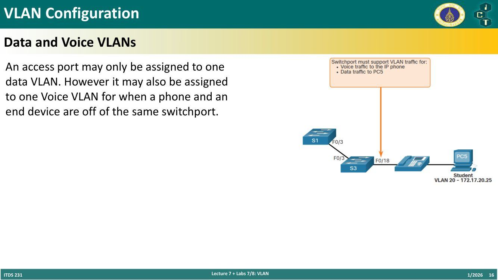
5.5 ตรวจสอบข้อมูล VLAN
คำสั่ง: show vlan [brief | id vlan-id | name vlan-name | summary]
| Task | Option |
|---|---|
| แสดงชื่อ VLAN, สถานะ และพอร์ต บรรทัดละ 1 VLAN | brief |
| แสดงข้อมูลตาม หมายเลข VLAN | id vlan-id |
| แสดงข้อมูลตาม ชื่อ VLAN (ASCII 1–32 ตัวอักษร) | name vlan-name |
| แสดง สรุปข้อมูล VLAN | summary |
show vlan summary→ จำนวน VLAN ที่มี, VTP VLANs, extended VLANsshow interface vlan 20→ สถานะ SVI เช่น "Vlan20 is up, line protocol is up", Hardware is EtherSVI, MTU 1500 bytes
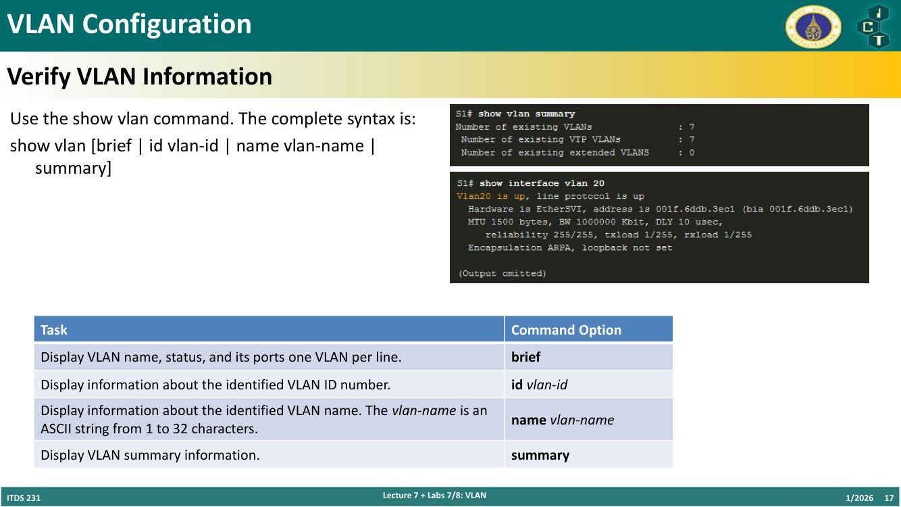
5.6 ลบ VLAN
- ลบทีละ VLAN:
no vlan vlan-id - ⚠️ ก่อนลบ VLAN ให้ย้ายพอร์ตสมาชิกทั้งหมดไป VLAN อื่นก่อน (ไม่งั้นพอร์ตเหล่านั้นใช้งานไม่ได้)
- ลบทุก VLAN:
delete flash:vlan.datหรือdelete vlan.dat - reload switch เมื่อลบทุก VLAN
- คืนค่าโรงงาน: ถอดสาย data ทั้งหมด → ลบ startup-configuration → ลบไฟล์ vlan.dat → reload
6. VLAN Trunks
6.1 คำสั่งตั้งค่า Trunk ⭐
Trunk เป็น layer 2 และส่ง traffic ของทุก VLAN
| Task | IOS Command |
|---|---|
| เข้า global configuration mode | Switch# configure terminal |
| เข้า interface configuration mode | Switch(config)# interface interface-id |
| ตั้งพอร์ตเป็น trunk ถาวร | Switch(config-if)# switchport mode trunk |
| ตั้ง native VLAN ที่ไม่ใช่ VLAN 1 | Switch(config-if)# switchport trunk native vlan vlan-id |
| กำหนดรายการ VLAN ที่ผ่าน trunk ได้ | Switch(config-if)# switchport trunk allowed vlan vlan-list |
| กลับ privileged EXEC mode | Switch(config-if)# end |
6.2 ตัวอย่างตั้งค่า Trunk
Subnet ของแต่ละ VLAN:
| VLAN | ชื่อ | Subnet |
|---|---|---|
| 10 | Faculty/Staff | 172.17.10.0/24 |
| 20 | Students | 172.17.20.0/24 |
| 30 | Guests | 172.17.30.0/24 |
| 99 | Native | 172.17.99.0/24 |
พอร์ต F0/1 ของ S1 ตั้งเป็น trunk:
S1(config)# interface fa0/1
S1(config-if)# switchport mode trunk
S1(config-if)# switchport trunk native vlan 99
S1(config-if)# switchport trunk allowed vlan 10,20,30,99
S1(config-if)# end
Note: ตัวอย่างนี้สมมติเป็น switch 2960 ที่ใช้ 802.1Q tagging — Layer 3 switch ต้องตั้ง encapsulation ก่อน ตั้ง trunk mode
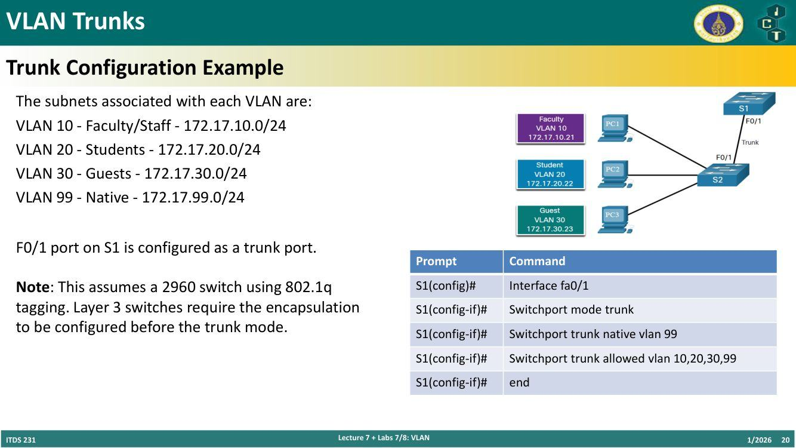
6.3 ตรวจสอบ Trunk
ตั้ง trunk mode และ native VLAN แล้วใช้ show interfaces fa0/1 switchport จะเห็น:
- Administrative Mode: trunk (ตั้งเป็น trunk ในการตั้งค่า)
- Operational Mode: trunk (ทำงานเป็น trunk จริง)
- Encapsulation: dot1q (802.1Q)
- Trunking Native Mode VLAN: 99
- Trunking VLANs Enabled: ALL → ทุก VLAN ที่สร้างบน switch ส่ง traffic ผ่าน trunk นี้ได้
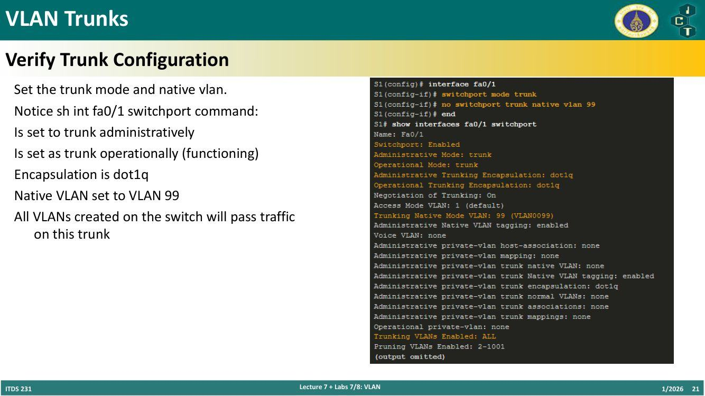
6.4 Reset Trunk กลับค่าเริ่มต้น
(1) คืนค่า trunk เริ่มต้นด้วยคำสั่ง no:
S1(config)# interface fa0/1
S1(config-if)# no switchport trunk allowed vlan
S1(config-if)# no switchport trunk native vlan
S1(config-if)# end
- ทุก VLAN ผ่านได้ (Trunking VLANs Enabled: ALL)
- Native VLAN = VLAN 1
- ตรวจด้วย
sh int fa0/1 switchport
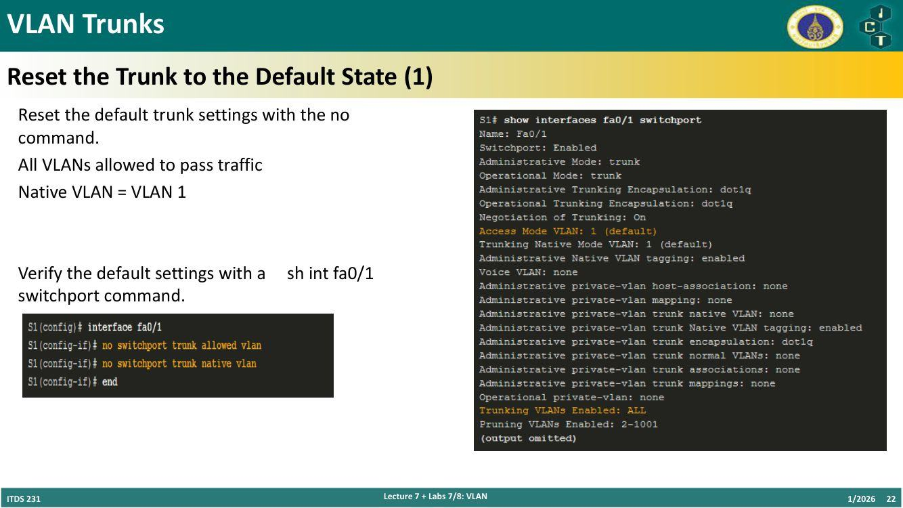
(2) เปลี่ยน trunk กลับเป็น access mode:
S1(config)# interface fa0/1
S1(config-if)# switchport mode access
S1(config-if)# end
- Administrative Mode: static access
- Operational Mode: static access
- Access Mode VLAN: 1 (default)
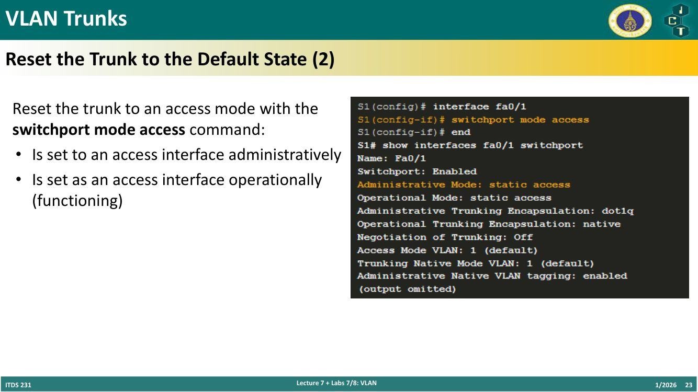
7. สรุปคำสั่ง
| ทำอะไร | คำสั่ง |
|---|---|
| สร้าง VLAN | vlan 10 → name faculty |
| พอร์ตเป็น access | switchport mode access |
| พอร์ตเข้า VLAN | switchport access vlan 10 |
| ตั้ง voice VLAN | switchport voice vlan 150 (คำสั่งนี้ไม่มีในสไลด์ — เสริมจาก Cisco IOS ให้สอดคล้องกับ Voice VLAN 150 ที่เห็นใน show output) |
| ดู VLAN | show vlan brief / id / name / summary |
| ดูพอร์ต | show interfaces fa0/18 switchport |
| ลบ VLAN | no vlan 10 |
| ลบทุก VLAN | delete flash:vlan.dat แล้ว reload |
| ตั้ง trunk | switchport mode trunk |
| native VLAN | switchport trunk native vlan 99 |
| VLAN ที่ผ่าน trunk | switchport trunk allowed vlan 10,20,30,99 |
| reset trunk | no switchport trunk allowed vlan, no switchport trunk native vlan |
| trunk → access | switchport mode access |
8. คำศัพท์สำคัญ
| คำศัพท์ | ความหมาย | จำง่าย ๆ ว่า |
|---|---|---|
| VLAN | LAN เสมือน แบ่งกลุ่มแบบ logical | ห้องแชทกลุ่ม |
| Segmentation | แบ่งกลุ่มอุปกรณ์บน switch เดียวกัน | |
| Broadcast domain | ขอบเขตที่ broadcast ไปถึง | VLAN ทำให้เล็กลง |
| Default VLAN | VLAN 1 — default/native/management, ลบไม่ได้ | |
| Data VLAN | traffic ผู้ใช้ | |
| Native VLAN | บน trunk ไม่ติด tag | |
| Management VLAN | SSH/Telnet VTY, เป็น SVI | |
| SVI | Switched Virtual Interface | IP ของ switch |
| Voice VLAN | traffic VoIP พร้อม CoS | |
| Trunk | ลิงก์ point-to-point ส่งหลาย VLAN | ท่อรวม |
| Access port | พอร์ตของ 1 data VLAN (+ 1 voice VLAN) | |
| IEEE 802.1Q / dot1q | มาตรฐาน tag 4 bytes | |
| TPID | Tag Protocol ID = 0x8100 | |
| User Priority | 3 bits priority | |
| CFI | 1 bit, token ring | |
| VID | 12 bits, 4096 VLANs | |
| FCS recalculation | ใส่/ถอด tag ต้องคำนวณ FCS ใหม่ | |
| CDP | Cisco Discovery Protocol แจ้ง voice VLAN | |
| CoS | Class of Service = QoS layer 2 | |
| Normal / Extended range | 1–1005 / 1006–4095 | |
| vlan.dat | ไฟล์ใน flash เก็บ normal-range VLAN | |
| VTP | ซิงก์ VLAN ระหว่าง switch | |
| Administrative / Operational mode | ที่ตั้งค่า / ที่ทำงานจริง |
9. สรุปท้ายบท / จุดที่มักออกสอบ
- VLAN = logical segmentation — unicast/multicast/broadcast แยกในแต่ละ VLAN, แต่ละ VLAN มี IP range ของตัวเอง, broadcast domain เล็กลง
- ประโยชน์ 6 ข้อ: smaller broadcast domains, security, IT efficiency, reduced cost, performance, simpler management
- ไม่มี VLAN → ทุกเครื่องได้รับ broadcast ทั้งหมด
- VLAN 1 = default VLAN, default native VLAN, default management VLAN, ลบ/เปลี่ยนชื่อไม่ได้ — Cisco แนะนำย้ายหน้าที่ไป VLAN อื่น
- Data VLAN (user traffic), Native VLAN (trunk เท่านั้น, frame ไม่ติด tag), Management VLAN (SSH/Telnet, SVI), Voice VLAN
- Trunk: point-to-point, หลาย VLAN, ขยาย VLAN ทั้งเครือข่าย, default รองรับทุก VLAN, 802.1Q
- 802.1Q tag 4 bytes: TPID 0x8100 (2 bytes), priority 3 bits, CFI 1 bit, VID 12 bits = 4096 VLANs; ใส่ระหว่าง Source MAC กับ Type; ใส่/ถอด tag → คำนวณ FCS ใหม่; tag ใช้เฉพาะระหว่าง switch
- Voice VLAN: VoIP phone = switch 3 พอร์ต, switch บอก voice VLAN ด้วย CDP, CoS = QoS layer 2; access port มีได้ 1 data VLAN + 1 voice VLAN
- VLAN ranges: normal 1–1005 (vlan.dat, 1002–1005 legacy, 1 และ 1002–1005 ลบไม่ได้, SMB), extended 1006–4095 (running-config, service provider, ต้องใช้ VTP)
- คำสั่ง:
vlan id+name;switchport mode access+switchport access vlan id - show vlan brief / id / name / summary
- ลบ:
no vlan id(ย้ายพอร์ตก่อน!), ลบทุกอันdelete flash:vlan.dat+ reload; factory reset = ถอดสาย + erase startup-config + ลบ vlan.dat + reload - Trunk:
switchport mode trunk,switchport trunk native vlan 99,switchport trunk allowed vlan 10,20,30,99; layer 3 switch ต้องตั้ง encapsulation ก่อน - Verify trunk: administrative/operational = trunk, encapsulation dot1q, native VLAN 99, trunking VLANs enabled ALL
- Reset:
no switchport trunk allowed vlan+no switchport trunk native vlan→ ทุก VLAN ผ่าน, native = 1;switchport mode access→ กลับเป็น static access